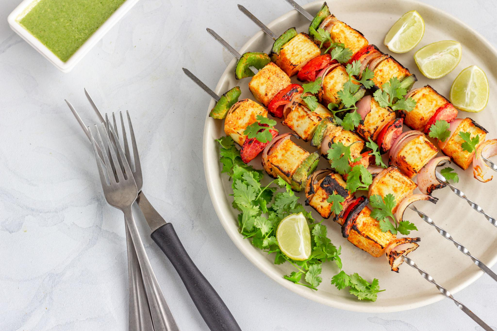
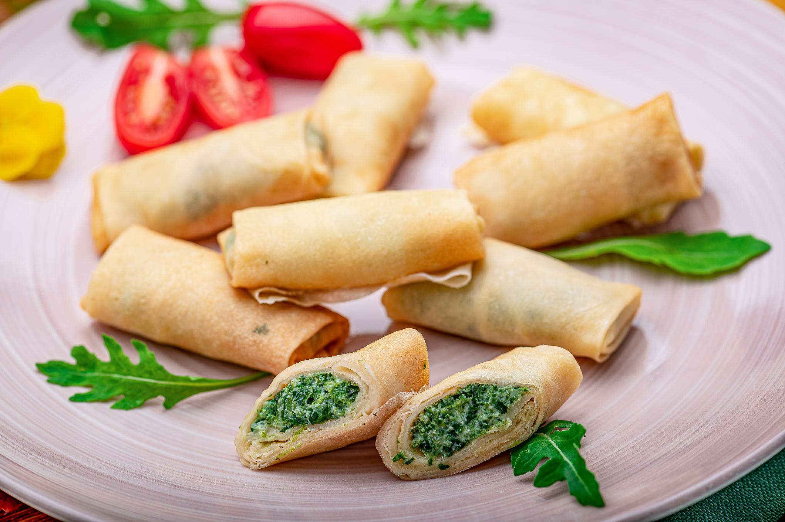
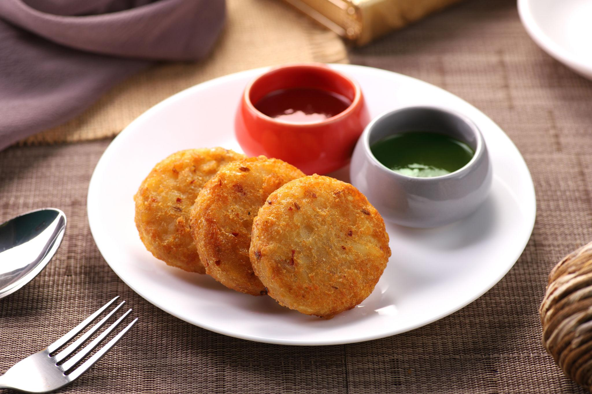
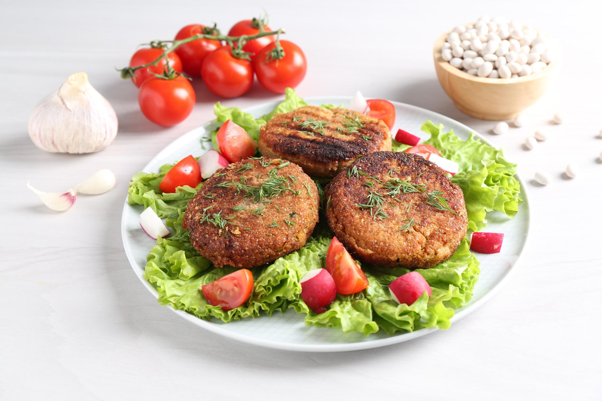

Paneer Tikka

Ingredients
- 200 g paneer (cubed)
- 1/2 cup yogurt (curd)
- 1 tsp ginger-garlic paste
- 1 tsp red chili powder
- 1/2 tsp turmeric
- 1 tsp garam masala
- 1 tsp lemon juice
- 1 tbsp oil
- Salt to taste
- Onion and capsicum cubes
How to make Paneer Tikka
-
In a bowl, mix yogurt, ginger-garlic paste, red chili powder,
turmeric, garam masala, lemon juice, oil, and salt.
-
Add paneer cubes, onion, and capsicum to the marinade and mix
well.
- Cover and marinate for about 30 minutes.
- Thread the paneer and vegetables onto skewers.
-
Grill in an oven or cook in a pan until lightly charred and
cooked.
- Serve hot with mint chutney and lemon wedges.
Spring Roll

Ingredients
- 10 spring roll wrappers
- 1 cup cabbage (finely shredded)
- 1/2 cup carrot (grated)
- 1/2 cup capsicum (thinly sliced)
- 1 tsp garlic (finely chopped)
- 1 tsp soy sauce
- 1/2 tsp black pepper
- Salt to taste
- 2 tbsp oil (for cooking filling)
- Oil for deep frying
How to make Spring Roll
-
Heat oil in a pan and sauté chopped garlic for a few seconds.
-
Add cabbage, carrot, and capsicum. Stir-fry for 2–3 minutes.
-
Add soy sauce, black pepper, and salt. Mix well and cook for
another minute.
- Let the filling cool slightly.
-
Place some filling on a spring roll wrapper, fold the sides,
and roll it tightly.
- Seal the edge with a little water or flour paste.
-
Heat oil in a pan and deep fry the rolls until golden brown
and crispy.
- Serve hot with chili sauce or ketchup.
Aloo Tikki

Ingredients
- 3 boiled potatoes (mashed)
- 1/4 cup peas (boiled)
- 1 tsp ginger (grated)
- 1 tsp red chili powder
- 1/2 tsp garam masala
- 2 tbsp breadcrumbs
- Salt to taste
- 2 tbsp oil (for shallow frying)
How to make Aloo Tikki
- In a bowl, mix mashed potatoes and boiled peas.
-
Add ginger, red chili powder, garam masala, breadcrumbs, and
salt.
- Mix everything well to form a dough-like mixture.
- Divide the mixture and shape into small round patties.
- Heat oil in a pan and place the patties on it.
-
Shallow fry until both sides become golden brown and crispy.
- Serve hot with green chutney or tomato ketchup.
Cheese Balls

Ingredients
- 1 cup boiled sweet corn
- 1/2 cup grated cheese
- 2 tbsp cornflour
- 2 tbsp breadcrumbs
- 1/2 tsp black pepper
- 1/2 tsp chili flakes
- Salt to taste
- Oil for deep frying
How to make Cheese Balls
-
In a bowl, mix boiled corn, grated cheese, cornflour,
breadcrumbs, pepper, chili flakes, and salt.
- Mix well until it forms a soft mixture.
- Take small portions and shape them into round balls.
- Heat oil in a pan for deep frying.
- Fry the balls until they turn golden brown and crispy.
- Remove and place on tissue paper to absorb excess oil.
- Serve hot with mayonnaise or chili sauce.
Veg Cutlet

Ingredients
- 2 boiled potatoes (mashed)
- 1/2 cup mixed vegetables (carrot, peas, beans)
- 1 tsp ginger (grated)
- 1 tsp red chili powder
- 1/2 tsp garam masala
- 2 tbsp breadcrumbs
- Salt to taste
- Oil for shallow frying
How to make Veg Cutlet
- Boil and mash the potatoes in a bowl.
- Add boiled mixed vegetables to the mashed potatoes.
-
Add ginger, red chili powder, garam masala, breadcrumbs, and
salt.
- Mix everything well to form a soft dough.
- Shape the mixture into small round or oval patties.
- Heat oil in a pan and place the cutlets on it.
-
Shallow fry until both sides become golden brown and crispy.
- Serve hot with tomato ketchup or green chutney.
Chana Kabab

Ingredients
- 1 cup boiled chickpeas (chana)
- 1 boiled potato (mashed)
- 1 tsp ginger-garlic paste
- 1/2 tsp red chili powder
- 1/2 tsp garam masala
- 2 tbsp breadcrumbs
- 2 tbsp chopped coriander leaves
- Salt to taste
- Oil for shallow frying
How to make Paneer Tikka
- Mash the boiled chickpeas in a bowl.
-
Add mashed potato, ginger-garlic paste, spices, breadcrumbs,
coriander leaves, and salt.
- Mix everything well to form a soft mixture.
- Shape the mixture into small round or oval kababs.
- Heat oil in a pan and place the kababs on it.
-
Shallow fry until both sides turn golden brown and crispy.
- Serve hot with green chutney or tomato ketchup.